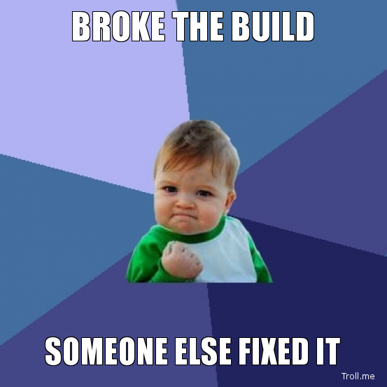
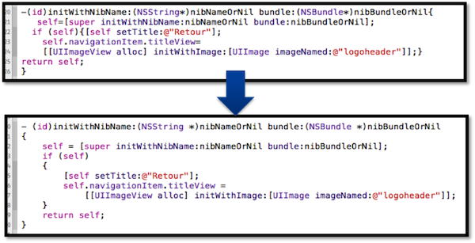
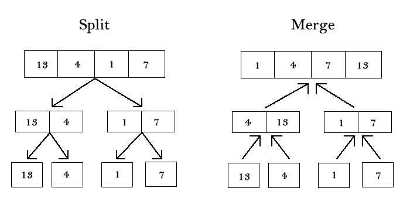
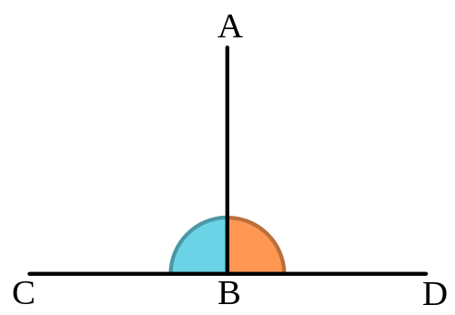

Designing for Testability
Testability
What?
Why?
How?
let's start with what we know
un-testable code
maybe console.log() will help...
un-testable code
no visibility into the state and activities of the program
- what state is the program in?
- how did it get there?
- where can it go from here?
not having answers to these questions is bad news
un-testable code

Avoidance isn't a solution
un-testable code
It shouldn't take one of these to understand your code
Testable code
Quickly find answers to these questions:
- what state is the program in?
- how did it get there?
- where can it go from here?
Testability
Verify you've created the right program
Validate your implementation
Testability
It's not magic
It's just good design
Testability
What?
Why?
How?
Designing for Testability
Facilitates rapid development
Cleaner code
Better maintainability
Greater confidence in implementation
Improves extensibility
Greater visibility reduces bugs
Designing for Testability
Real business value
Bad design
Failure to keep business promises
Dissatisfied customers
Loss of respect
Legal action
Loss of time (Support Reps, Managers, Devs)
Loss of $$$ (User loss, legal action, dev time)
Bad Design
Hurts Business
Testability
What?
Why?
How?
Abstraction
"All problems in computer science can be solved by another level of indirection"
David Wheeler
"...except for the problem of too many layers of indirection."
Kevlin Henney
remember
code is for people
not machines
people don't read binary
or pretty squares
except maybe him
we can make our code pretty
but it's not how we comprehend things
we comprehend images fast
real life entities encapsulate ideas
we express ideas—abstractions
using the semantics of a programming language
each idea has a representation in the code
ideas drive design
Abstraction
Represent semantics in data and programs while hiding implementation details
Allow programmers to focus on a few things at a time
Express concepts or ideas not associated with any specific instance
languages
provide low-level abstractions
function add(a, b) {
return a + b;
}
var netWorth = 100000;
var flowers = ["rose", "tulip", "daisy"];
var student = "John";
programmers
define high-level abstractions
function Role(startDate) {
this.startDate = startDate;
}
function Manager() {}
Manager.prototype.manage = new function() {
console.log("Get back to work!");
};
Manager.prototype = new Role();
function Developer() {
this.linesOfCode = 0;
}
Developer.prototype.work = new function() {
this.linesOfCode++;
};
Developer.prototype = new Role();
classes and objects
Classes encapsulate the state (or data) and operations (or algorithms) associated with high-level abstractions
Class instances give life to your abstractions
Such organization promotes programmer comprehension of the code
high-level abstractions
function Printer() {}
Printer.prototype.print = function (document) {
console.log(document.getText());
};
function Document(text) {
this.text = text;
}
Document.prototype.getText = function() {
return this.text;
};
var reportCard = new Document("GPA 4.0 - Great Job!");
var printer = new Printer();
printer.print(reportCard); // "GPA 4.0 - Great Job!"
"Printers" interacting with "Documents"
Increases Testability
be wise
Bad abstractions can kill (brain cells, productivity, etc.)
e.g. AbstractSingletonProxyFactoryBean
There is such a thing as too much abstraction
How much is
too much?
Complexity increases with levels of indirection
Trust your feelings
If your coworkers can't easily grasp your abstractions, then rethink your design.
Try running your abstractions past a 5th-grader
Decomposition
"The secret to building large apps is never build large apps. Break your applications into
small pieces. Then, assemble those testable, bite-sized pieces into your big application"
Justin Meyer, creator of JavaScriptMVC
Decomposition
Fundamental technique for taming complexity and creating viable abstractions
Structure: Package, Module, Class, Function, etc.
Algorithms: Divide-and-Conquer, Map/Reduce, Recursion, etc.
Decomposition
Solutions to big problems are concise because they are expressed in terms of solutions to smaller problems
Decomposition helps us invent the abstractions we need
Example: Merge Sort
Solve smaller, easier problems which combine into the full solution
Hypo-decomposition
function doAllTheThings() {
$.get('/api/data', function(data, ...) {
if (data == "ERROR") {
$('#errorMsg').show();
$.post('/api/logging', 'we had an error', function(...) {
$('#errorMsg').append('Error logged. Try later.
');
});
} else {
for (var i = 0; i < data.someArray.length; i++) {
someGlobal.total += data.someArray[i].value;
}
// it goes on, and it's ugly...
}
});
}
Balanced decomposition
FormController.resetForm();
DataService.getSomeData({
success: function (data) {
data = DataService.process(data);
FormController.populateForm(data);
EventBus.trigger('formReady', data);
},
error: function (err) {
LoggerService.error(err);
FormController.displayError(err);
}
});
Increases Testability
Hyper-decomposition
var creditCardNumberDigit = new CreditCardNumberDigit("7");
creditCardNumber.push(creditCardNumberDigit);
creditCard.setCreditCardNumber(creditCardNumber);
var creditCardOwnerName = new FullName("Jason", "Dobry");
creditCard.setCreditCardOwnerName(creditCardOwnerName);
cardReader.swipe(creditCard);
if (cashRegister.approveCard(cardReader.getLastSwipedCardInfo())) {
cashRegister.processTransaction();
cashRegister.printer.printReceipt(cashRegister.getLastTransaction());
}
// it goes on, and it's ugly
Be wise
Use metrics and common sense
Abstraction and decomposition can't help with poor choice of algorithm or data structure
Design by Contract
"Correctness is clearly the prime quality. If a system does not do what it is supposed to do,
then everything else about it matters little."
Bertrand Meyer, creator of the Eiffel programming language
Builds
trust
between application components
Builds
confidence
in your implementation
Builds
reliability
in your software
What's a contract?
"You scratch my back, I'll scratch yours."
"I'll have a Big Mac with Coke and fries."
"That will be $6.89 at the window. Please pull forward."
P.P.I.
Pre-conditions
Post-conditions
Class Invariants
Pre-conditions
- Specific to operation
- Obligations the caller (client) must meet
- Specify minimum acceptable input conditions
- Protect the callee (supplier) by specifying how little is acceptable
- The contractor must not be liable for failing to carry out tasks outside the specified scope
Pre-conditions
/**
* Returns the value at the front of the queue without removing it
*
* @pre !isEmpty()
*
* @post return value is the value at the front of the queue
* @post the queue is unchanged
*/
Queue.prototype.peek = function () {
return this.queue[this.queue.size - 1];
};
Pre-conditions
With checking
/**
* Returns the value at the front of the queue without removing it
*
* @pre !isEmpty()
*
* @post return value is the value at the front of the queue
* @post the queue is unchanged
*/
Queue.prototype.peek = function () {
if (!this.isEmpty()) {
return this.queue[this.queue.size - 1];
} else {
throw new InvalidOperationException("Queue is empty!");
}
};
Post-conditions
- Specific to operation
- Obligations the callee (supplier) must meet
- Specify minimum acceptable output conditions
- Protect the caller (client) by specifying how much should be done
- The client is entitled to receive a certain result
Post-conditions
/**
* Removes and returns the value at the front of the queue
*
* @post previous value of peek() has been removed from the queue
* @post the return value is the previous value of peek()
* @post size() == the previous value of size() - 1
*/
Queue.prototype.pop = function () {
return this.queue.pop();
};
Post-conditions
With checking
/**
* Removes and returns the value at the front of the queue
* @post previous value of peek() has been removed from the queue
* @post the return value is the previous value of peek()
* @post size() == the previous value of size() - 1
*/
Queue.prototype.pop = function () {
var prevSize = this.queue.size, prevPeek = this.peek(),
returnValue = this.queue.pop();
if (this.peek() === returnValue) {
throw new Exception("Something broke!");
} else if (prevPeek !== returnValue) {
throw new Exception("Something else broke!");
} else if (this.queue.size !== prevSize - 1) {
throw new Exception("We're really broke!");
}
return returnValue;
};
Class Invariants
- Class-level conditions that must always be satisfied by the supplier
- These conditions are checked at every public operation
Class Invariants
/**
*
* @constructor
* @invariant size() >= 0
* @invariant isEmpty() == true iff size() == 0
*/
function Queue() {
this.size = 0;
}
Queue.prototype.size = function () {
return this.queue.size;
};
Queue.prototype.isEmpty = function () {
return this.queue.size === 0;
};
Use Exceptions
Or some alert system for condition violations
Increases Visibility
Increases Testability
Law of Demeter
"Good fences make good neighbors."
Robert Frost, "Mending Wall"
Law of Demeter
Each unit should have only limited knowledge about other units
Law of Demeter
Avoid "reaching through" objects to access yet more objects
driver.leg.foot.push(car.gasPedal);
person.arm.hand.fingers[1].push(doorbell);
Minimize Coupling
Talk to immediate friends only
function Demeter() {
this.a = {
print: function() { console.log('hello'); }
};
}
Demeter.prototype.b = function (c) {
var d = new D();
return d.calc() + c.sum();
};
var demeter = new Demeter();
demeter.b(c);
a, b, c, and d are immediate friends of class "Demeter"
Minimize Coupling
Talk to immediate friends only
function Demeter() {
this.a = {
print: function() { console.log('hello'); }
};
}
Demeter.prototype.b = function (c) {
var d = new D();
return d.e.calc() + c.f.sum() + someGlobal;
};
var demeter = new Demeter();
demeter.b(c);
e, f, and someGlobal are NOT immediate friends
Increases Testability
Orthogonality
"The more tied components are to each other, the less reusable they will be, and the more
difficult it becomes to make changes to one without accidentally affecting another"
Rebecca Murphey, author of jQuery Fundamentals
Orthogonality

Need to make a change?
How painful is it to change your implementation?
How painful is it tracking down bugs you didn't realize your changes had caused?
Need to make a change?
Shotgun surgery - Blasting your code to make a change, making the same or similar change in many places.
A does A, X, Y, Z - B does B, X, Y, Z - C does C,X, Y, Z -
I'd hate to have to change X...
Orthogonality
A does A - B does B
X does X - Y does Y - Z does Z -
A and B use X, Y, and Z
A is still just A and B is still just B even when X, Y, and Z change
Increases Testability
Single Responsibility
+
Separation of concerns
"Write programs that do one thing and do it well."
Doug Mcllory, Unix philosophy
Angular.js Example
Single Responsibility
- Safe, cross-browser logging? - Use $log
- Ajax? - Use $http
- window.location? - Use $location
- Access params in url? - Use $routeParams
Angular.js Example
Separation of Concerns
- DOM? - Use a directive
- Controller? - Er, use a controller
- Data? - Use a service
Do yourself a favor
Organize your tools
No one builds a house with a single "house-builder tool".
Increases Testability
DRY
"Every piece of knowledge must have a single, unambiguous, authoritative representation within
a system."
The Pragmatic Programmer
feedback modal example
Need a button that opens a feedback modal in many places.
The button element will of course be on several pages.
But do I duplicate the code that opens the modal, collects and validates input, and submits the feedback to the server?
No
(function ($) {
var FeedbackModal = function (el) {
function openFeedbackModal() {
/* setup bindings for opening the modal */
}
function closeFeedbackModal() {
/* setup bindings for closing the modal */
}
function submit() {
/* setup bindings for when the user clicks submit */
}
};
$.fn.feedBackModal = function() {
return new FeedbackModal($(this));
};
$(function () {
$("#feedbackModal").feedbackModal()
});
var $this = el;
})(jQuery);
Automatically activate the modal on the page by including:
Or dynamically activate the modal with:
document.getElementById('feedbackModal').feedBackModal();
Logging
Servers can generate tons of data with useful information
Be proactive in understanding what your server is saying
Logging
Consider using/writing client-side log-to-server functionality
console.log() in your browser doesn't cut it